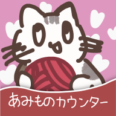

棒針編み段数カウンター

棒針編み用の段数カウンターです。
模様のループ数のカウントもできます。
編み物・手芸を楽しむ人のための、ちいさな便利ツール集置き場です。
手芸中のちょっとした不便を解消するWebアプリを、少しずつ作ります。
すべてのツールはスマートフォンのブラウザからも利用できます。
棒針編み用の段数カウンターです。
模様のループ数のカウントもできます。
編み物・手芸が好きなひよっこエンジニアが個人で制作・運営するWebツールサイトです。
自分が編み物をしていて「こんなツールがあったらいいな」と感じたものを形にして、同じように手芸を楽しむ方々に使っていただけたらと思い公開しています。
今後も少しずつツールを追加していく予定です。
ご意見・ご要望は X: @haruby863 よりお気軽にどうぞ。